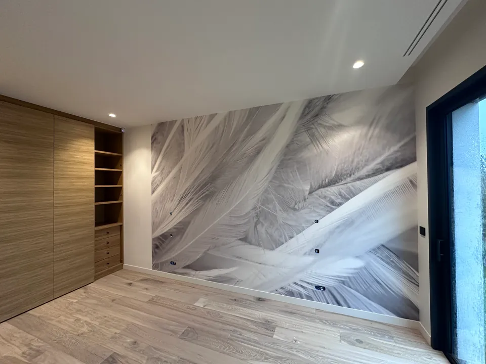

État initial : plaques de plâtre et bandes de joints
Le chantier a démarré sur des parois et des plafonds en plaques de plâtre, dont les bandes de joints sont encore apparentes, dans de grands volumes sous une importante hauteur de plafond.


Style & Déco est intervenu dans une maison contemporaine de 300 m² habitables, aux grands volumes et aux larges baies vitrées, pour les préparations, les peintures et les finitions décoratives.

Le chantier a démarré sur des parois et des plafonds en plaques de plâtre, dont les bandes de joints sont encore apparentes, dans de grands volumes sous une importante hauteur de plafond.
Avant la pose des revêtements de sol, nous avons ratissé l'intégralité des murs et des plafonds de la maison. Les enduits ont été projetés mécaniquement avec notre machine airless Graco Mark V, un matériel professionnel adapté aux grandes surfaces.
Cette préparation complète des supports, réalisée avant l'intervention du carreleur, vise une régularité d'ensemble sur des murs et des plafonds de grande hauteur.
Après ces premières préparations, nous avons laissé intervenir les autres corps de métier : le carreleur a posé les revêtements de sol, le menuisier et les autres intervenants ont poursuivi leurs installations. Nous sommes ensuite revenus pour les dernières préparations et les peintures.


Avant toute pulvérisation, nous avons soigneusement protégé les sols carrelés, les dressings, les menuiseries, les portes toute hauteur en chêne et les autres ouvrages neufs exposés.
Cette étape fait partie de notre méthode : préserver le travail des autres artisans avant de peindre.
Nous avons poncé les enduits et repris les dernières préparations nécessaires, puis appliqué un primaire de fixation avant la mise en peinture complète des murs et des plafonds. Toutes les peintures ont été appliquées par pulvérisation mécanisée à l'airless.
Les murs ont reçu une peinture de teinte grège, les plafonds une peinture blanche mate : une harmonie sobre, qui laisse la lumière des grandes baies vitrées jouer sur les volumes.

Plusieurs espaces de la maison ont reçu des finitions décoratives personnalisées. Nous y avons appliqué des enduits décoratifs Marmorino, avec un travail de matière, puis lustré les surfaces à la machine.
Selon les espaces, les finitions ont été réalisées dans des teintes claires ou brunes, comme le montrent les photographies de l'application, du lustrage et des résultats.


Nous avons également posé des papiers peints panoramiques. Deux de ces décorations sont photographiées ici : l'une à motif de feuillages, l'autre à motif de plumes.


Ce chantier illustre notre manière de travailler sur une maison de grandes dimensions : un matériel professionnel adapté aux grandes surfaces, des préparations maîtrisées, une organisation qui s'articule avec les autres artisans et une attention constante aux finitions, des surfaces unies aux enduits décoratifs.
Assurés en responsabilité civile professionnelle et en décennale, pour les activités déclarées à nos contrats. Attestations sur demande.
Retrouvez nos autres chantiers dans la galerie des réalisations, ou découvrez notre page peintre en bâtiment à Perpignan.